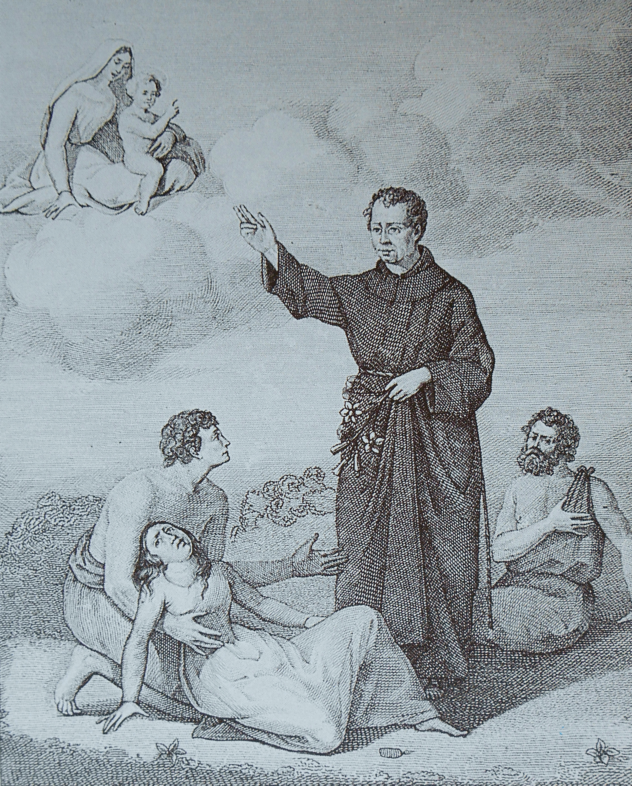

1565/67
Il frate Salvatore da Horta arriva a Cagliari e trascorre i suoi ultimi anni nel convento.

San Salvatore da Horta, 1520-1567
Fonte: Collezione Piloni, Cagliari nelle sue stampe
Il frate Salvatore da Horta arriva a Cagliari e trascorre i suoi ultimi anni nel convento.

San Salvatore da Horta, 1520-1567
Fonte: Collezione Piloni, Cagliari nelle sue stampe